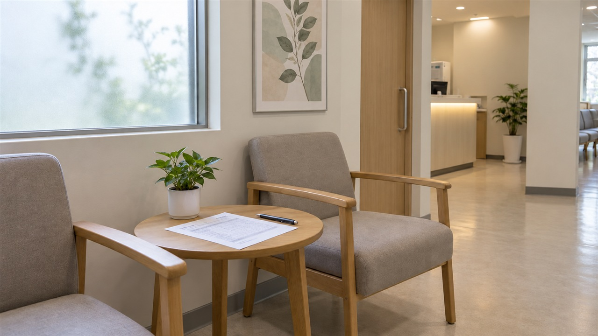
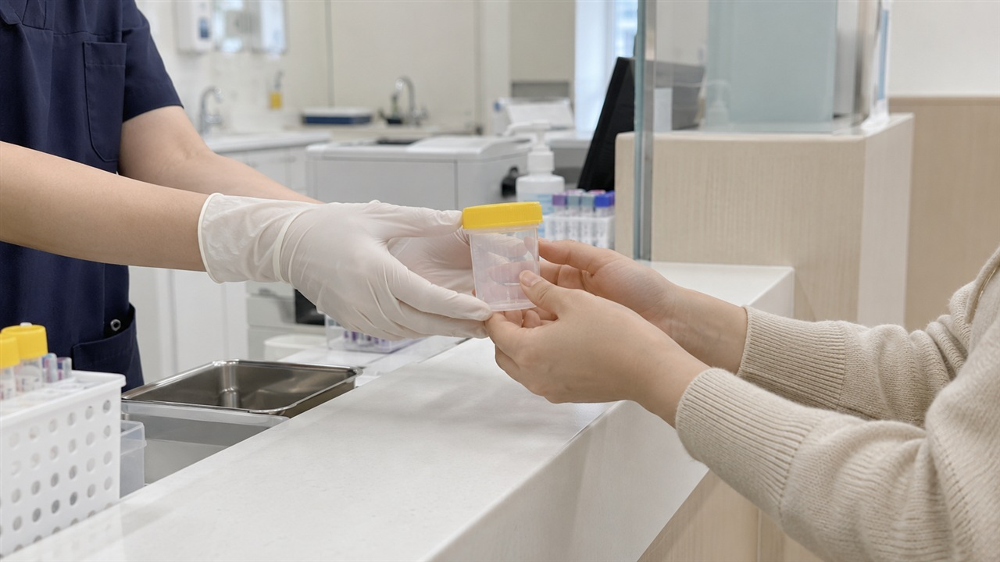
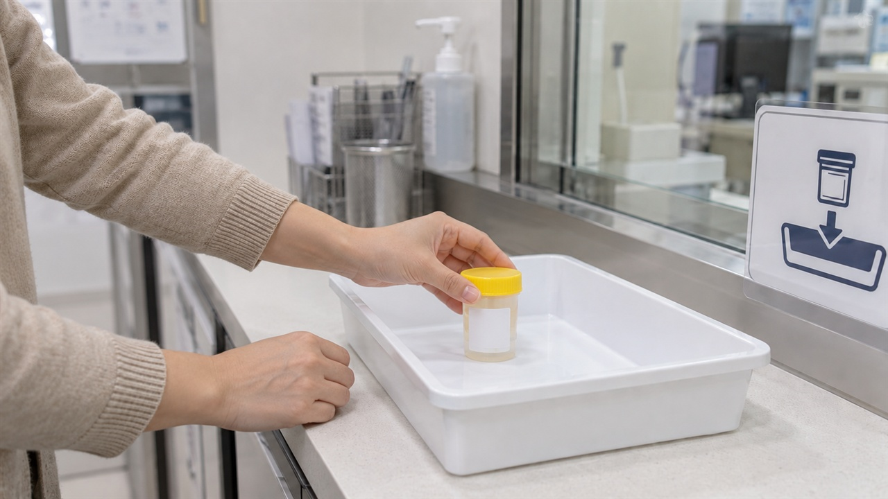

가을철 건강검진 결과표를 열어보았을 때
소변검사 항목에 적힌 '요단백 1+' 또는 '약양성(±)' 글자를 보고 깜짝 놀라신 적 있으신가요?
'혹시 내 콩팥에 문제가 생긴 것은 아닐까?'
'변기 속 거품이 안 꺼지는 것도 다 이것 때문이었나?'
덜컥 염려가 앞서며 화장실을 오갈 때마다 신경이 쓰이셨을 겁니다.
![[스티커: 턱 빠지게 기겁하는 꿀벌 😲]](images/stickers/sticker01_shocked.jpg)
검진표에 1+가 찍혔다고 해서 신장 이상을 섣불리 단정할 수는 없습니다.
소변검사 시험지봉은 하루 총량이 아닌 '순간 농도'를 재는 간이 선별 검사이기 때문입니다.
오늘 에디터 혀니가 불안하셨을 여러분을 위해
진짜 거품뇨 감별의 한계와 일시적 원인, 그리고 아침 첫 소변 재검사 수칙을 차근차근 짚어드릴게요!
| 검진표에 찍힌 단백뇨 1+, 신장 기능 이상을 뜻하는 걸까요
건강검진 소변검사는 시약이 묻은 시험지봉(Dipstick)을 소변에 적셔 색깔을 확인하는 선별 방식입니다.
하루 24시간 동안 배출된 전체 총량이 아니라 검사 당시 소변 속 단백질의 순간 농도만을 측정합니다.
![[스티커: 눈 번쩍 솔깃한 꿀벌 ✨]](images/stickers/sticker02_excited.jpg)
단백질 농도가 10mg/dL 미만이면 정상 음성(-), 15~30mg/dL는 경계치 약양성(±),
그리고 30~100mg/dL 범위에 들면 양성(1+)으로 표시됩니다.
다만 시약 제조사에 따라 기준치에 일부 차이가 있을 수 있으므로 결과표의 참고치를 우선 확인하셔야 합니다.
농도를 재는 특성상, 신장에 아무런 병이 없더라도
검진 전 물을 적게 마셔 소변이 진하게 농축되면 정상인도 1+로 측정되는 경우가 흔합니다.

많은 분이 변기에 거품이 생기면 단백뇨라고 걱정하시지만
단순히 서서 소변을 볼 때 생기는 유속과 낙차, 수분 부족만으로도 큰 거품이 풍성하게 일어납니다.
거품의 모양이나 지속 시간만으로는 단백뇨 유무를 자가 판별할 수 없으며, 객관적인 소변검사를 거쳐 확인하는 것이 확실합니다.
거품이 많아도 소변검사에서 정상인 경우가 흔하고, 반대로 단백뇨가 있어도 거품이 눈에 띄지 않을 수 있습니다.
다만 일반 물리적 거품은 방울이 크고 불규칙하며 빠르게 꺼지는 반면,
단백뇨 거품은 세탁기 비누 거품이나 맥주 거품처럼 입자가 미세하고 촘촘하여 변기 물을 내려도 도기 벽면에 잘 남는 경향이 있습니다.
![[스티커: 과몰입 돋보기 탐정 꿀벌 🔍]](images/stickers/sticker03_detective.jpg)
| 신장 이상이 없어도 단백뇨가 일시적으로 검출되는 흔한 이유
단백뇨 1+ 판정을 받은 분 중 상당수는 신장 조직에 구조적 손상이 없는 '일과성 기능성 단백뇨'에 해당합니다.
평소 컨디션에 따라 건강한 신장에서도 일시적으로 단백질이 새어 나올 수 있거든요!
첫 번째 원인은 검진 전날의 고강도 운동입니다.
무거운 기구를 드는 격렬한 웨이트 트레이닝이나 마라톤 등 강도 높은 신체 활동 후에는
사구체 투과성이 일시적으로 변해 소변으로 단백질이 새어 나올 수 있습니다.
두 번째는 수분 섭취 부족과 땀 배출입니다.
체내 수분이 줄어들면 배출되는 소변량이 줄어들어 단위 부피당 단백질 농도가 치솟게 됩니다.
세 번째는 낮 동안 서 있을 때 생기는 기립성 단백뇨와 고열, 급성 피로입니다.
특히 마른 체형의 청장년층은 서 있을 때 척추 각도나 신장 정맥 압박으로 단백질이 일시 검출되기도 합니다.
• 임의 약물 복용 금지: 검진표 1+ 수치만 보고 신장약이나 민간요법 즙을 자의로 챙겨 드시지 않는 편이 좋습니다.
• 재검 전 생활 관리: 재검 전 격렬한 운동은 피하고, 최근 운동이나 발열, 생리 여부를 상담 시 담당의에게 알려 주세요.
• 수분 보충 주의점: 평소와 비슷하게 물을 드시되 검사 직전 과하게 마시지 마세요. 또한 심장이나 신장에 기저 이상이 있어 수분 제한을 안내받으신 분은 주치의 지침을 우선 지키셔야 합니다.
![[스티커: 하얗게 불태운 탈진 꿀벌 😮💨]](images/stickers/sticker05_exhausted.jpg)
| 단백뇨 재검 전날과 당일, 꼭 지켜야 할 채취 수칙

소변검사에서 또다시 일시적인 위양성이 나오는 것을 막으려면
재검 전날과 당일 아침 몇 가지 주의사항을 미리 지켜주시는 것이 좋습니다.
첫 번째는 전날 고강도 운동 쉬어가기입니다.
격렬한 웨이트 트레이닝이나 마라톤은 사구체 투과성을 일시적으로 높여 또 단백뇨를 띄울 수 있으니 전날은 편안히 휴식해 주세요.
두 번째는 검사 직전 억지로 물 많이 마시지 않기입니다.
소변을 잘 보려고 물을 급하게 많이 마시면 소변이 지나치게 묽어져 정확한 농도 판정이 어려워집니다. 평소처럼 갈증을 달래는 정도로만 드시는 것이 좋습니다.
![[스티커: 호루라기 비상 경보 꿀벌 🚨]](images/stickers/sticker06_emergency.jpg)
소변을 받을 때는 요도 분비물에 오염되지 않도록
처음 1~2초간 나오는 소변은 변기에 살짝 버리고 그 뒤에 나오는 '중간뇨'를 받아 주세요.
여성분들은 생리 기간 중이거나 분비물이 섞이면 위양성이 나오기 쉬우니 생리가 완전히 끝난 뒤 재검을 받으시는 편이 안전합니다.
참고로 아침 첫 소변이 권장되는 이유는 밤새 누워있어 기립성 요인을 줄여주기 때문이에요.
하지만 집에서 소변을 따로 챙겨갈 필요 없이 편하게 검사실을 방문해 채취하셔도 충분히 정확하답니다!
재검사에서도 단백뇨 1+ 이상이 반복된다면 진료를 미루지 말고 신장내과를 찾아야 합니다.
임상 지침의 '최소 3개월' 기준은 진료를 미루라는 뜻이 아니라,
신장 기능 이상이 3개월 이상 지속되는지 과거 검사와 임상 자료를 종합해 만성콩팥병 여부를 평가하는 의학적 판정 기준이기 때문입니다.
진료실에서는 시험지 검사를 넘어 신장 손상 위험도를 정밀 평가하기 위해
소변 알부민/크레아티닌비(uACR) 검사를 우선 권장하며,
상황에 따라 소변 단백/크레아티닌비(UPCR)와 혈액 검사(eGFR)를 함께 종합 평가합니다.
![[스티커: 온몸 젖힌 쌍엄지 척 꿀벌 👍]](images/stickers/sticker07_thumbsup.jpg)
만약 단백뇨와 함께 아침에 눈 주위가 붓거나 저녁에 양말 자국이 깊게 파이는 부종이 생길 때,
소변 색이 붉거나 콜라색으로 변할 때는 지체 없이 진료실을 찾아 전문적인 평가를 받아보시는 편이 안전합니다.
검진표 속 1+ 수치 하나에 미리 낙담하지 마시고,
검사기관에서 안내받은 방법으로 재검사를 진행하며 신장 건강을 차분하게 챙겨나가시길 바랍니다.
여러분은 건강검진 소변검사 후 재검 안내를 받아보신 적이 있으신가요,
아니면 평소 거품뇨 때문에 걱정하셨던 적이 있으신가요? 댓글로 편하게 들려주세요 😊
대사 수치와 신장 검사 오차를 줄이는 검진 전 생활 수칙도 함께 확인해 보세요!
- 국가건강정보포털 — 소변검사: 검사 검체와 종류
- 국가건강검진 사후관리 지침 — 요단백 판정 기준 및 재검 권고
- 대한신장학회 — 만성콩팥병 및 단백뇨 일반인 교육지침
- 국제신장병가이드라인기구 (KDIGO 2024 Clinical Practice Guideline for CKD; DOI: 10.1016/j.kint.2023.10.018)
- 미국신장재단 (National Kidney Foundation, NKF) — Albuminuria and Proteinuria Guide